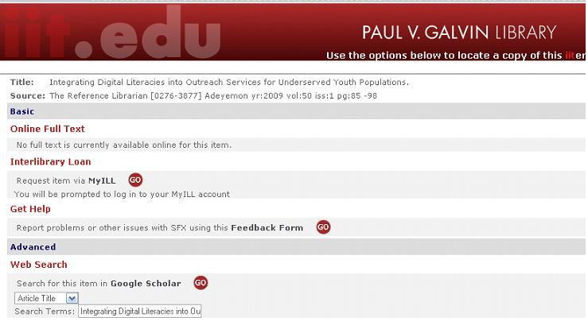

Requesting Articles
Occasionally, you will notice that some articles are not available for download as a .pdf file through a journal or academic search engine, as is the case in the figure below:

CAPTION: CAPTION NOT AVAILABLE
Clicking on the Get Article link will direct you to a page like this, where you will either be able to retrieve the article through another website or where you will request the article through your myILL account.
CAPTION: For this resource, the only option is to request the article through MyILL.
Your myILL account requires a separate setup from your myIIT account, so you will need to register before you are able to request an article. Think of myILL as asking a friend to make a copy of an article for you, because that is essentially what you are doing. You will be notified by email when your article is ready to download, and you can log into myILL and view your page of delivered items. For more help requesting articles, see the Library FAQ and How-to Pages.
Requesting a Book From Another Library
When searching for a book, it is best to begin by searching the IIT library system. If you are unsuccessful in finding the title you are looking for, next try to locate the book in I-Share. If I-Share yields no results, the next step is to search for your book in WorldCat.
If you are confused when using any of the library systems, you can always refer back to the Library FAQ and How-to Pages which have a selection of tutorials explaining the step-by-step instructions for requesting resources.